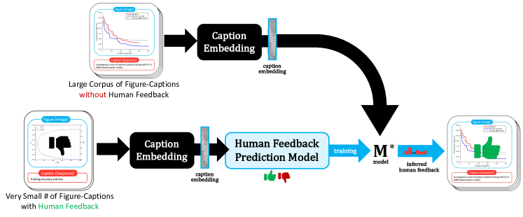
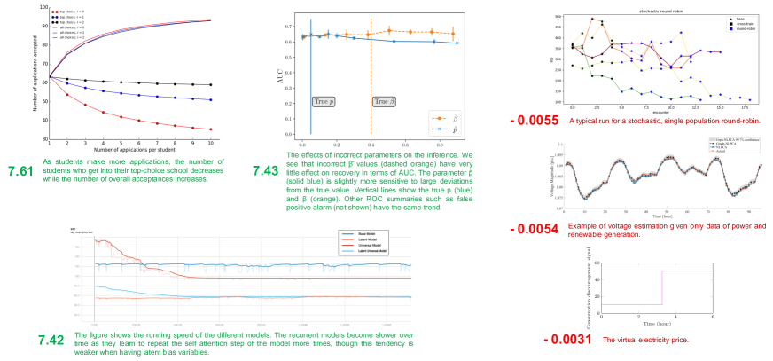
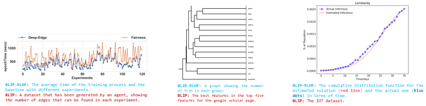
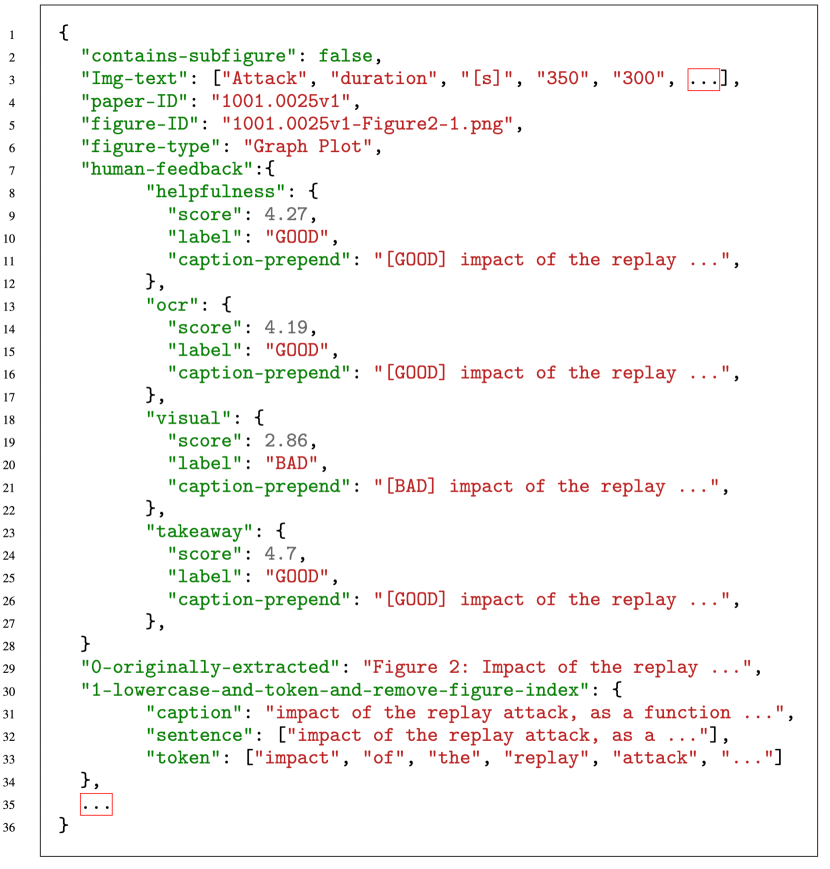

pmatrix
FigCaps-HF: A Figure-to-Caption Generative Framework and Benchmark with Human Feedback
Abstract
Captions are crucial for understanding scientific visualizations and documents. Existing captioning methods for scientific figures rely on figure-caption pairs extracted from documents for training, many of which fall short with respect to metrics like helpfulness, explainability, and visual-descriptiveness [15] leading to generated captions being misaligned with reader preferences. To enable the generation of high-quality figure captions, we introduce FigCaps-HF a new framework for figure-caption generation that can incorporate domain expert feedback in generating captions optimized for reader preferences. Our framework comprises of 1) an automatic method for evaluating quality of figure-caption pairs, 2) a novel reinforcement learning with human feedback (RLHF) method to optimize a generative figure-to-caption model for reader preferences. We demonstrate the effectiveness of our simple learning framework by improving performance over standard fine-tuning across different types of models. In particular, when using BLIP as the base model, our RLHF framework achieves a mean gain of 35.7%, 16.9%, and 9% in ROUGE, BLEU, and Meteor, respectively. Finally, we release a large-scale benchmark dataset with human feedback on figure-caption pairs to enable further evaluation and development of RLHF techniques for this problem.
1 Introduction
For scientific articles, figures like graphs, charts and plots are key to effectively conveying the work’s motivation, methodology, and results to readers. To better understand a given figure and, by extension, the research work itself, it is then crucial that the corresponding captions are informative, i.e., a given caption can represent and complement the figure, situating it in the context of the article. While the importance of figure captions is universally acknowledged, writing a good caption is not trivial. More often than not, many scholarly works contain generic figure captions and lack descriptiveness, thus rendering the figure unhelpful. This has motivated extensive research into developing methods that can automatically generate captions for figures to assist researchers in writing better captions and improve the accessibility of scientific figures for visually impaired readers.
Recent works in figure captioning formulate the problem as a vision-to-language task and have primarily focused on developing methods to encode the figure image and metadata and decode captions effectively. For model training, these methods use figure-caption pairs extracted from existing scientific articles [13]. While this method of data collection is appealing due to its easy access, this also leads to the problem of poor model learning and generalization when the captions are not well written. As discussed in [15], more than 50% of the captions in arXiv cs.CL papers were classified as not helpful to the domain expert readers. Thus, figure captioning methods trained on such data are not calibrated to reader preferences and thus generate captions that are uninformative.
Motivated by the above, we introduce FigCaps-HF, a new benchmark and learning framework for improving figure-to-caption generation by aligning model optimization to reader preferences. Figure 1 describes our proposed framework. Our proposed framework is designed around two key questions: (1) How can we incorporate feedback from domain experts in a computationally efficient manner without compromising on performance and usability? (2) How can we develop a scalable framework for feedback generation that minimizes human labeling efforts?
To address (1) we utilize offline Upside-Down RL ( RL or UDRL) to align the model’s generated captions with expert feedback. Unlike previous applications of RLHF [35] which uses on-policy algorithms [40] for reward maximization, our approach of using offline reward-conditioned behavioral cloning for model optimization is computationally efficient. Once our reward model is trained and we predict the reward scores for each sample, we do not need the reward model during figure-to-caption model training. Furthermore, offline UDRL-like methods are known to perform equally well as their other counterparts [11] while being efficient and simple.
For generating feedback for figure-caption pairs in a scalable manner, we introduce a general caption-scoring mechanism, guided by domain expert feedback, which allows us to evaluate quality of figure-caption pairs with respect to readers preference. Specifically, we utilize a small human-annotated dataset of image-caption pairs, each rated on a variety of factors including helpfulness, OCR content, takeaway etc. to train an auxiliary model to score for a given caption on the basis of the quality measure. This step is integral because it allows us to infer caption scores for our larger training-set. Additionally, we publically release our benchmark dataset with feedback for future research on developing figure-to-caption models.
Our experimental results indicate an increase in performance by using our Upside-Down RL-guided approach. Firstly, our empirical results indicate that our trained reward model is very well calibrated, and the annotation statistics of our ground-truth annotations match those from our inferred annotations. Secondly, we evaluate the performance of our approach on a variety of image-to-text models and observe that models with RLHF achieve the best performance; specifically, our best-performing model has a 35.7% increase in BLEU, 16.9% increase in ROUGE-L, and 9% increase in METEOR score using RLHF. Our ablation studies show the beneficial effects of further investigation into parts of our setup, including the type and nature of feedback used.
Summary of Main Contributions. The key contributions of this work are as follows:
-
•
We introduce a novel RLHF framework for figure-to-caption generation that leverages a small amount of actual human feedback to learn an oracle model to infer human feedback on a larger scale for any unknown figure-caption pair encountered in the wild.
-
•
We propose a technique that learns an oracle model from a small amount of human feedback, which can then be used for predicting the human feedback scores for any new unseen figure-caption pair.
-
•
Extensive experiments demonstrate the effectiveness of our framework for figure-to-caption generation via human feedback.
-
•
To facilitate further research on this important new problem, we release a comprehensive benchmark dataset for figure-to-caption generative models with human feedback. This new benchmark data will enable other researchers to develop even better RLHF models for figure-to-caption generation.
2 Background
Figure Caption Generation. Most prior work in scientific figure-captioning can be broadly divided into the following three categories based on their different input modalities: the figure-image alone, the underlying data chart of the figure, and relevant texts from the original article. In the vision-based approach, prior works have primarily utilized a vision-encoder to encode figure-features followed by a text-decoder to generate captions. [41, 38, 37] focus on explicitly extracting different features of the figure before combining their information for downstream tasks. [6, 7, 8] create and leverage FigCAP, a synthetic figure-caption dataset and adapt an LSTM model to produce captions. More recently, [13] collected a dataset, namely SciCAP, from published articles and used a CNN+LSTM pipeline to generate captions. There are few prior works which examine the abilities of utilizing SOTA image-captioning pipelines, which primarily utilize large pre-trained Transformer [46] modules, for figure-captioning. A closely related task is Figure Question Answering, which formulates the more general problem of figure understanding as a visual-question answering task; there has been a variety of works in this space towards modeling [41, 19, 26, 42, 53, 17, 18] as well as creating curated datasets including DVQA [17], FigureQA[19], PlotQA [32], Leaf-QA [5], and ChartQA [31]. In the data-driven approach, research focuses on using only the tabular data, as well as some metadata, to generate a caption. Table-to-Text[49] focuses on generating captions for rows in arbitrary tables. Chart-to-Text [34] creates a new large-scale dataset focusing on figure-captioning and adopt an encoder-decoder transformer model to process the underlying data table and generate summaries.
In the text-driven approach, [15] focuses on utilizing only the relevant text in an article to generate a figure-caption, for example, using text explicitly referencing the figure.
Learning with Human Feedback Aligning model predictions with human preference has been shown to improve task performance in various areas, including natural language processing tasks like language model pretraining [20], machine translation [2, 21], text summarization [45], unlearning undesirable behaviors from language models [29], computer vision tasks like text-to-image generation [22, 52] and reinforcement learning tasks like training RL agents [30, 16, 23]. In contrast to prior works, our work also aims at improving figure caption generation by optimizing model learning to align with domain expert feedback. However, unlike previous work that leverages on-policy RL [40] algorithm to maximize the reward-weighted likelihood, our framework utilizes reward-conditioned behavioral cloning [11], an offline variant of upside-down RL method [43] to optimize model learning for reader preference. This provides a simpler and more controllable framework for human preference alignment. Furthermore, our feedback scheme allows for incorporating multiple feedback at different granularity as reward signal during the model optimization step, thus improving model learning. We propose a general human-feedback model along with a new benchmark with feedback to enable further research in developing and evaluating methods that optimize for reader preference.
3 Framework

In this section, we explain our proposed framework for learning with expert feedback(Figure 1). We first describe a standard figure captioning pipeline (Sec. 3.1). Next, we provide details of designing and training a generalizable human-feedback prediction model (Sec. 3.2). Finally, we discuss our feedback-aligned model training strategy instantiated as a simple RLHF framework (Sec. 3.3).
3.1 Preliminaries
In a figure-captioning problem, we are initially provided with a dataset consisting of figure-caption pairs . Given the dataset , we can then define a model , that takes in information corresponding to the figure and outputs a sequence of text as output. Typically, the input consists of only the figure image. However, other sources of information like figure-specific text from the corresponding document, OCR, figure metadata can also be utilized as input samples.
Assuming the general case of figure image as input, model is constructed using a vision encoder module to get image-based encoding and a language encoder-decoder module to encode and generate corresponding text. The weights can either be randomly initialized, or initialized by large-scale pretrained model weights. Furthermore, the model weights corresponding to the vision encoder and text encoder-decoder models can either be initialized with separate weights or jointly trained model weights. After initialization, model can then be trained for the task of caption generation.
Generally, for training such a model, Language Modeling (LM) loss is used as a standard training objective. Let be the input to the model , where is the input figure, and is the corresponding text sequence. Additionally, is represented as sequence of tokens from a fixed vocabulary : , where . Then the training objective is defined as:
| (1) |
where H denotes the cross-entropy loss and represents all the tokens in the caption prior to .
3.2 Human Feedback Prediction Model
To improve figure-to-caption generation, we propose to incorporate domain expert feedback into our optimization step. To generate feedback for figure-caption pairs, we thus propose to learn a feedback prediction model to score individual datasample based on different metrics representing reader preferences. Our objective is to learn a model that can predict human feedback scores for unseen captions accurately given small set of training samples.
To this end, we first label a small control set consisting of figure caption pairs with domain experts ratings. Here we assume that , i.e. the size of the control set is significantly less than the original noisy dataset (For example, if , then ). We can now train a model on to predict the human expert ratings for the original dataset . Specifically, given human feedback dataset containing figure-caption pairs and human expert evaluation metrics for each datasample , we want to train models to predict the scores respectively. Here the output of a model is a scalar quantity denoting a specific metric score for the given input caption. Thus we formulate the scoring problem as a regression task. Specifically, we can define our human-feedback prediction model as follows:
| (2) |
where, , and . In the above, is an embedding function that takes in input data and generates corresponding representation , and is a regression function to generate the scores respectively. We only train the regression function while keeping the weights of the embedding function fixed. For training the regression function, we use mean-squared error loss, written as: where is the predicted score while is the ground-truth evaluation score. After training the human-feedback prediction models, we compute scores for all the samples in the training dataset to construct our new set, which will be used for training the figure-caption model.
3.3 Reinforcement Learning with Human Feedback
Given the human-feedback prediction model described above, we can now use it as a reward model to train an image-to-text model that generates higher-quality captions. We achieve this goal, by formulating the problem as a reinforcement learning task. Specifically, for the given training dataset containing figure caption pairs , we can consider figures as the state of the environment, caption as the actions and the corresponding predicted metric scores for these captions as the rewards/outcomes. Then our objective is to learn a policy (which in this case would be the image-to-text model that we want to train) that maps from states() to actions() such that we maximize the reward for each action. In this way, we can generate output captions that better align with human judgment of a good figure-caption.
While there are many different approaches in the reinforcement learning literature [40] to achieve the above objective, we specifically focus on offline upside-down reinforcement learning (UDRL). We select offline UDRL because it computationally efficient and robustly performant without being algorithmically complex[11]. In UDRL, the motivation is to learn a policy () that maps the states () to actions () conditioned on specific rewards(). Thus the learning problem can be formulated as a supervised learning problem, wherein we first sample the triplets of from the environment to construct our dataset, which is then used to train using standard supervised learning objective. Specifically, we can write the optimization problem as:
| (3) |
We follow the above UDRL framework for learning an image-text model . For our setting, we consider our image-to-text model as our policy . For each caption , we compute a reward score and quantize it to generate a control token . Specifically, we binarize the reward score to generate two control tokens: <|good|> and <|bad|>. In general, the level of quantization is a hyperparameter that can be selected according to task or other factors. For each caption , we compute the control token by thresholding the output of , i.e. if then <|good|>, else <|bad|>. Here is a hyperparameter. Given the additional human feedback, we fine-tune with the following new objective function:
| (4) |
Where refers to the control token computed using the reward function for a given caption .
| # Fig-Caption Pairs | Human Feedback | Median | Mean | Std | Q1 | Q3 | |
| Actual | 400 | Helpfulness | 3 | 3.01 | 1.19 | 2 | 3 |
| Human Feedback | Takeaway | 2 | 2.16 | 1.22 | 1 | 2 | |
| Visual | 2 | 2.11 | 1.08 | 1 | 2 | ||
| OCR | 4 | 3.83 | 0.80 | 4 | 4 | ||
| Predicted | 106,834 | Helpfulness | 2.89 | 2.89 | 1.07 | 2.17 | 3.61 |
| Human Feedback | Takeaway | 1.95 | 2.06 | 1.03 | 1.33 | 2.66 | |
| Visual | 1.91 | 2.02 | 1.01 | 1.31 | 2.63 | ||
| OCR | 3.88 | 3.84 | 0.83 | 3.32 | 4.41 |
4 FigCaps-HF: Figure-Captioning with Human Feedback Benchmark
As noted before, captions from online scientific articles can be of ’low quality’ with respect to domain expert quality metrics [15]. This can, in turn, lead to poor figure-captioning models as these are trained to simply maximize the likelihood of the raw training data. Thus, our goal with the new benchmark is to provide additional training signals to improve figure-caption model without incurring the cost of re-creating a new dataset.
To this end, we propose our new benchmark for figure-captioning with feedback. Our benchmark consists of 133,543 figure-caption pairs [13] with feedback scores. Our dataset contains feedback based on different measures to evaluate quality of the author written captions for the corresponding figure. For each figure-caption pair, we evaluate the data sample based on four quality measures: (1) Helpfulness, (2) Takeaway, (3) Visual-descriptiveness (visual) and (4) Image-text (OCR) [15]. Each quality metric is selected to measure the ability of the readers to comprehend and draw inferences based on the provided figure and the corresponding caption.
We compute the feedback scores for each data sample in a scalable manner by first annotating a small subset with domain-expert feedback and then predicting score for the entire dataset using the human-feedback model described in Sec. 3.2. Specifically, we select 438 randomly sampled figure-caption pairs, each annotated by domain experts [15]. Each pair has been evaluated on 5-point Likert scale for each of the above mentioned quality metric. Using this labeled subset, we train a human-feedback prediction model to generate scores for the remainder of the dataset. Unlike the subset, we keep the scores for the entire dataset as a continuous value. This allows the users of the benchmark to accordingly decide their own scheme for labeling each figure-caption pair based on different thresholding criteria, thus providing flexibility for fine-grained feedback.
Table 1 presents an overview of the statistics related to the actual and predicted human feedback for the captioning of scientific figures. We see that the predicted human feedback values in our study show a diverse range, as indicated by the small standard deviation of and a consistent mean value across all ratings. Additionally, the alignment of the median predicted scores with the actual human feedback values indicates that the model’s performance is not skewed towards any particular rating but provides an accurate assessment across the range of ratings. This suggests that the human-feedback prediction model used to infer the scores is generalizable and can accurately assess the quality of captions across various ratings. Furthermore, the proposed model provides reliable scores for captions that fall outside the typical range of scores.
For further implementation details, please refer to the section "Additional Dataset Details" in the appendix.
| Model | #Params | ROUGE-L | BLEU | METEOR | ||
|---|---|---|---|---|---|---|
| ocr-only | Pegasus [50] | 0.27B | 2.6 | 4.78e-2 | 4.2 | |
| Figure-Only | TrOCR [25] | 0.23B | 2.5 | <0.1 | 1.8 | |
| BEiT+GPT2 | 0.24B | 14.2 | 0.5 | 1.24 | ||
| ViT[10] + RoBERTA[28] | 0.23B | 14.0 | 1.2 | 12.1 | ||
| ViT[10] + GPT2 | 0.24B | 14.2 | 1.8 | 12.6 | ||
| Figure-Caption | PromptCap [14] | 0.47B | 13.0 | 0.9 | 8.2 | |
| Flamingo [1] | 1.14B | 8.7 | 0.1 | 4.6 | ||
| GIT [47] | 0.17B | 11.9 | 0.2 | 9.1 | ||
| BLIP [24] | 0.25B | 13.0 | 1.4 | 13.2 | ||
| CLIPCap [33] | 0.15B | 10.3 | 1.2 | 13.1 | ||
| rlhf | Ours-BLIP-RLHF | 0.25B | 15.2 | 1.9 | 14.5 | |
| Ours-ViT+GPT2-RLHF | 0.24B | 13.8 | 2.0 | 12.6 |
5 Experiments
5.1 Setup
For our human-feedback prediction model, we use MCSE [51] as embedding function and a 2-layer MLP as regression function. For comparative evaluation, we select the following models as our baselines based on input: (1) OCR-only: Pegasus[50] , (2) Figure-only: TrOCR [25], BeiTGPT2 , ViTGPT2 [10], ViTRoBERTA [10, 28] and (3) Figure-Caption: PromptCap [14], Flamingo [1], GIT [47], BLIP [24] and CLIPCap [33]. We use ROUGE-L [27], METEOR [3] and BLEU [36] metrics to compare each model’s performance. For more details regarding individual baselines, metrics and dataset, please refer to the Appendix.
5.2 Results
We show our experimental results in Table 2. Specifically, we want to evaluate the performance of our RLHF framework for figure-caption generation. To this end, we compare our framework with standard fine-tuning method and benchmark the performance on the Test set of our proposed benchmark. We show fine-tuning results for all the above mentioned baselines. We use BLIP and ViTGPT2 to evaluate our RLHF framework. From Table 2, models trained using our proposed RLHF formulation performs better than simple fine-tunning. Specifically, for BLIP, RLHF provides has a 35.7% increase in BLEU, 16.9% increase in ROUGE-L, and 9% increase in METEOR score. For ViT+GPT2, RLHF provides a 11.1% increase in BLEU.
Aggregating the metrics, BLIP performs best, which is likely due to its aligned image encoder and text decoder which are pre-trained jointly. In contrast, ViT+GPT2’s modules are not aligned/trained jointly and the text decoder learns to attend to the vision encoder only during fine-tuning. Hence, for our approach, the type of pre-training can have an impact on the amount of model improvement.
Overall, since the performance increase is generalized among models with different pre-training strategies and overall model-structure, the results show the benefits of using this simple UDRL framework for fine-tuning. Utilizing only a small amount of human annotated data, different scoring mechanisms and prompts can be further developed to take advantage of this limited supervision and further increase performance.

5.3 Qualitative Results
To validate our framework’s ability to generate better reader-aligned captions than standard approaches, we conduct an extensive qualitative study. We evaluate the results of the human feedback prediction model and the figure-captioning models trained with RLHF. We provide our analysis below:
Human Feedback Prediction Model: To evaluate the generalizability our model, we first computed the score predictions on all the figure-caption pairs. Then we ordered the figure-caption pairs by the predicted scores and selected the top-3 figure-caption pairs with the largest score along with the bottom-3 figure-caption pairs with the smallest score. Results are provided in Figure 2. We observe that the figure-caption pairs with the largest scores are highly helpful to the reader as they mention specific takeaways from the figure (e.g., “as students make more applications, the number of students who get into their top-choice school decreases, while the number of overall acceptances increases.”), as well as mentioning specific visual aspects that are important to the understanding of it (e.g., “… Vertical lines show the true p (blue) and (orange)”). In contrast, the bottom-3 figure-caption pairs scored the lowest (shown in red on the right in Figure 2) are vague, without any takeaways, nor reference to visual elements in the figure.

| Model | #Params | ROUGE-L | BLEU | METEOR |
|---|---|---|---|---|
| Binary Feedback | 0.25B | 15.2 | 1.9 | 14.5 |
| Multi-label Feedback | 0.25B | 15.3 | 2.2 | 15.1 |
| Binary + Multi-label Feedback | 0.25B | 15.6 | 1.9 | 14.8 |
| #Params | ROUGE-L | BLEU | METEOR | |
|---|---|---|---|---|
| Helpfulness | 0.25B | 15.20 | 1.86 | 14.50 |
| Takeaway | 0.25B | 16.76 | 2.30 | 15.98 |
| Visual | 0.25B | 16.78 | 2.30 | 15.95 |
| OCR | 0.25B | 16.54 | 2.23 | 15.65 |
| #Params | ROUGE-L | BLEU | METEOR | |
|---|---|---|---|---|
| BERT | 0.25B | 15.65 | 1.93 | 14.73 |
| SciBERT | 0.25B | 15.77 | 2.01 | 15.09 |
| BLIP | 0.25B | 15.73 | 1.98 | 14.94 |
Figure-Caption Generative Model: To evaluate the quality of captions, we compare the output of BLIP-RLHF and BLIP (Fine-tuned) models. We show some of the interesting results in Figure 3. In general we see that, qualitatively BLIP-RLHF produces better captions compared to fine-tuned BLIP. In most cases, captions produced by BLIP (Fine-tuned) are either explaining the given figure incorrectly (Figure 3, leftmost sub-figure), not relevant (Figure 3, middle sub-figure) or are completely uninformative (Figure 3, rightmost sub-figure). On the other hand, captions produced by BLIP-RLHF method are more faithful to the figure, captures semantic relation between texts to summarize the phenomenon and utilizes visual attributes in explaining the figure. We provide more examples and analysis in the Appendix.
5.4 Ablation Study
We perform the following ablation experiments to better understand different components of our framework. We provide the details of our findings below.
Effect of Different Human Feedback Labels: To understand how the level of quantization of our reward signals (Binary vs Multi-level) affect the model learning, we conduct the comparative study by modifying the feedback while training the BLIP-RLHF model. First, we trained the model for 10 epochs using multi-labeled human feedback (Row 2) , specifically, we used 5 levels of human feedback (very bad , bad, neutral, good, very good) calculated at the 20th, 40th, 60th, 80th percentile respectively to ensure an equal number of samples. We also experimented with varying label coarsity during the course of training (Row 3); specifically, we trained the model with 5 epochs of binary-label feedback followed by 5 epochs of multi-label feedback. We show our results in Table 3. Both aforementioned approaches with finer feedback outperform simple binary feedback and demonstrate, through our RL framework, the model’s ability and receptiveness to leverage more finer human feedback effectively. The experiment also indirectly validates the quality of our human prediction model, which is capable of providing useful labels at different levels of coarsity that can be leveraged for increased performance on a downstream task like figure-captioning. The study also shows the further potential gains that can be made by further investigating different feedback mechanisms.
Effect of different human feedback metrics We also study the effect of using different metrics as feedback for training the figure-caption models. In particular, we compare results of training the BLIP-RLHF model with the Helpfulness, Takeaway, Visual-descriptiveness (visual) and Image-text (OCR) feedback scores provided in our benchmark. We provide the results in Table 5. We see that training BLIP-RLHF with Takeaway, visual and COR feedback performs better than Helpfulness. This is understandable as helpfulness rating is subjective while Visual and Takeaway are objective evaluation metrics respectively. This shows that the type of feedback is important and that further gains can be made by modeling different aspects of the annotated human dataset.
Effect of different figure-caption representations To understand the effect of using different figure-caption representations, we use BERT, SciBERT and BLIP to encode our figure-captions pairs and use their final-layer representations of the [CLS] token to train our human feedback prediction model. The different representations outperform our default MCSE implementation, indicating that our human feedback prediction model, and downstream figure-captioning performance, are sensitive to the quality of representations used. Additionally, further performance gains can be made by using different representations, for example, by encoding different modalities (text only vs joint encoding of text and vision).
Effect of human feedback position: To understand the sensitivity of the model to the position of human feedback, we compare the performance of appending and pre-pending the human feedback labels in Table 6. Since our models generate text, during test time, without any human feedback label prompt, they can only rely on feedback during training. Additionally, due to the auto-regressive generation of our models, they only observe the label before generation, and for append, only observe the label after generation. Intuitively, pre-pending should work best since the generation is conditioned on the label. The results support this and show that ViT+GPT2 and BLIP perform better when trained with pre-pended human feedback.
| Model | #Params | ROUGE-L | BLEU | METEOR | |
|---|---|---|---|---|---|
| rlhf-append | Ours-BLIP-RLHF | 0.25B | 13.6 | 1.8 | 13.2 |
| Ours-VIT-GPT2-RLHF | 0.24B | 13.8 | 1.6 | 11.9 | |
| rlhf-prepend | Ours-BLIP-RLHF | 0.25B | 15.2 | 1.9 | 14.5 |
| Ours-ViT+GPT2-RLHF | 0.24B | 13.8 | 2.0 | 12.6 |
6 Discussion, Limitations & Conclusion
In this work, we contribute a new methodology to improve caption generation for scientific figures. We show that incorporating domain expert feedback in learning a model for figure-ti-caption generation improves both model performance and caption quality. Our proposed framework is scalable (requires limited manual human effort in labeling) and flexible (allows for incorporating multiple reward signals at different granularity). We also propose a new benchmark of figure-caption pairs with caption quality scores to further the research efforts in reader-aligned figure-captioning tasks. We hope that this new dataset will allow the researchers to benchmark their own methods for incorporating human feedback in figure-to-caption generation tasks and various other image-to-text generation tasks.
While we empirically show that our framework can generate better captions, it currently lack the ability to incorporate multiple complementary feedback. Furthermore, currently we need to quantize the reward score to be able to utilize it as a valid feedback when training the model. This limits the applicability of our framework in scenarios where a numerical score does not correspond to a categorical label like ’good’ or ’bad’.
As a future goal, we aim to improve our framework by focusing on the above issues. We also aim to further explore the properties and further use cases of the human feedback prediction model. For example, we would like to further benchmark the generalizability of the human-feedback prediction model to various data and task distribution shifts. This can provide further insights into developing methods that are robust and adaptable.
7 Ethics Statement
Our work on improving figure caption generation is important in building accessible assistive tools for scientific community and visually impaired people. However, like many works in the area of generative AI, our work/general ideas also carry the risk of misuse i.e. our proposed method can be advertised by a third party as a deployable product, when in fact, we believe that our proposed method is a research endeavor and still has room for improvement. Another potential negative impact of our work could be complacent consideration of generating human feedback without due consideration to human subjects involved. This is our key motivation to make our dataset with feedback labels public, to allow interested researchers to develop and benchmark their own methods that require feedback.
Finally, we comment on the dataset privacy considerations for the proposed benchmark. Our proposed dataset and other datasets considered in this work are licensed for academic/non-commercial research (Creative Commons Attribution-Non Commercial-Share Alike 4.0 International License). Our proposed dataset does not contain any personal information.
References
- [1] Jean-Baptiste Alayrac, Jeff Donahue, Pauline Luc, Antoine Miech, Iain Barr, Yana Hasson, Karel Lenc, Arthur Mensch, Katie Millican, Malcolm Reynolds, et al. Flamingo: a visual language model for few-shot learning. arXiv preprint arXiv:2204.14198, 2022.
- [2] Dzmitry Bahdanau, Philemon Brakel, Kelvin Xu, Anirudh Goyal, Ryan Lowe, Joelle Pineau, Aaron Courville, and Yoshua Bengio. An actor-critic algorithm for sequence prediction. arXiv preprint arXiv:1607.07086, 2016.
- [3] Satanjeev Banerjee and Alon Lavie. Meteor: An automatic metric for mt evaluation with improved correlation with human judgments. In Proceedings of the acl workshop on intrinsic and extrinsic evaluation measures for machine translation and/or summarization, pages 65–72, 2005.
- [4] Hangbo Bao, Li Dong, Songhao Piao, and Furu Wei. BEit: BERT pre-training of image transformers. In International Conference on Learning Representations, 2022.
- [5] Ritwick Chaudhry, Sumit Shekhar, Utkarsh Gupta, Pranav Maneriker, Prann Bansal, and Ajay Joshi. Leaf-qa: Locate, encode & attend for figure question answering. In Proceedings of the IEEE/CVF Winter Conference on Applications of Computer Vision, pages 3512–3521, 2020.
- [6] Charles Chen, Ruiyi Zhang, Sungchul Kim, Scott Cohen, Tong Yu, Ryan Rossi, and Razvan Bunescu. Neural caption generation over figures. In Adjunct Proceedings of the 2019 ACM International Joint Conference on Pervasive and Ubiquitous Computing and Proceedings of the 2019 ACM International Symposium on Wearable Computers, pages 482–485, 2019.
- [7] Charles Chen, Ruiyi Zhang, Eunyee Koh, Sungchul Kim, Scott Cohen, and Ryan Rossi. Figure captioning with relation maps for reasoning. In 2020 IEEE Winter Conference on Applications of Computer Vision (WACV), pages 1526–1534, 2020.
- [8] Charles Chen, Ruiyi Zhang, Eunyee Koh, Sungchul Kim, Scott Cohen, and Ryan Rossi. Figure captioning with relation maps for reasoning. In Proceedings of the IEEE/CVF Winter Conference on Applications of Computer Vision, pages 1537–1545, 2020.
- [9] Jacob Devlin, Ming-Wei Chang, Kenton Lee, and Kristina Toutanova. Bert: Pre-training of deep bidirectional transformers for language understanding. arXiv preprint arXiv:1810.04805, 2018.
- [10] Alexey Dosovitskiy, Lucas Beyer, Alexander Kolesnikov, Dirk Weissenborn, Xiaohua Zhai, Thomas Unterthiner, Mostafa Dehghani, Matthias Minderer, Georg Heigold, Sylvain Gelly, Jakob Uszkoreit, and Neil Houlsby. An image is worth 16x16 words: Transformers for image recognition at scale. ICLR, 2021.
- [11] Scott Emmons, Benjamin Eysenbach, Ilya Kostrikov, and Sergey Levine. Rvs: What is essential for offline rl via supervised learning? arXiv preprint arXiv:2112.10751, 2021.
- [12] Timnit Gebru, Jamie Morgenstern, Briana Vecchione, Jennifer Wortman Vaughan, Hanna Wallach, Hal Daumé Iii, and Kate Crawford. Datasheets for datasets. Communications of the ACM, 64(12):86–92, 2021.
- [13] Ting-Yao Hsu, C Lee Giles, and Ting-Hao Huang. SciCap: Generating captions for scientific figures. In Findings of the Association for Computational Linguistics: EMNLP 2021, pages 3258–3264, Punta Cana, Dominican Republic, November 2021. Association for Computational Linguistics.
- [14] Yushi Hu, Hang Hua, Zhengyuan Yang, Weijia Shi, Noah A Smith, and Jiebo Luo. Promptcap: Prompt-guided task-aware image captioning. arXiv:2211.09699, 2022.
- [15] Chieh-Yang Huang et al. Summaries as captions: Generating figure captions for scientific documents with automated text summarization. Open Review, 2023. https://openreview.net/pdf?id=80R7RVLcsf.
- [16] Borja Ibarz, Jan Leike, Tobias Pohlen, Geoffrey Irving, Shane Legg, and Dario Amodei. Reward learning from human preferences and demonstrations in atari. Advances in neural information processing systems, 31, 2018.
- [17] Kushal Kafle, Brian Price, Scott Cohen, and Christopher Kanan. Dvqa: Understanding data visualizations via question answering. In Proceedings of the IEEE conference on computer vision and pattern recognition, pages 5648–5656, 2018.
- [18] Kushal Kafle, Robik Shrestha, Scott Cohen, Brian Price, and Christopher Kanan. Answering questions about data visualizations using efficient bimodal fusion. In Proceedings of the IEEE/CVF Winter conference on applications of computer vision, pages 1498–1507, 2020.
- [19] Samira Ebrahimi Kahou, Vincent Michalski, Adam Atkinson, Ákos Kádár, Adam Trischler, and Yoshua Bengio. Figureqa: An annotated figure dataset for visual reasoning. Sixth International Conference on Learning Representations Workshop, 2017.
- [20] Tomasz Korbak, Kejian Shi, Angelica Chen, Rasika Bhalerao, Christopher L Buckley, Jason Phang, Samuel R Bowman, and Ethan Perez. Pretraining language models with human preferences. arXiv preprint arXiv:2302.08582, 2023.
- [21] Julia Kreutzer, Shahram Khadivi, Evgeny Matusov, and Stefan Riezler. Can neural machine translation be improved with user feedback? arXiv preprint arXiv:1804.05958, 2018.
- [22] Kimin Lee, Hao Liu, Moonkyung Ryu, Olivia Watkins, Yuqing Du, Craig Boutilier, Pieter Abbeel, Mohammad Ghavamzadeh, and Shixiang Shane Gu. Aligning text-to-image models using human feedback. arXiv preprint arXiv:2302.12192, 2023.
- [23] Kimin Lee, Laura Smith, and Pieter Abbeel. Pebble: Feedback-efficient interactive reinforcement learning via relabeling experience and unsupervised pre-training. arXiv preprint arXiv:2106.05091, 2021.
- [24] Junnan Li, Dongxu Li, Caiming Xiong, and Steven Hoi. Blip: Bootstrapping language-image pre-training for unified vision-language understanding and generation. In International Conference on Machine Learning, pages 12888–12900. PMLR, 2022.
- [25] Minghao Li, Tengchao Lv, Lei Cui, Yijuan Lu, Dinei Florencio, Cha Zhang, Zhoujun Li, and Furu Wei. Trocr: Transformer-based optical character recognition with pre-trained models. arXiv preprint arXiv:2109.10282, 2021.
- [26] Ying Li, Qingfeng Wu, and Bin Chen. Multi-attention relation network for figure question answering. In Knowledge Science, Engineering and Management: 15th International Conference, KSEM 2022, Singapore, August 6–8, 2022, Proceedings, Part II, pages 667–680. Springer, 2022.
- [27] Chin-Yew Lin. ROUGE: A package for automatic evaluation of summaries. In Text Summarization Branches Out, pages 74–81, Barcelona, Spain, July 2004. Association for Computational Linguistics.
- [28] Yinhan Liu, Myle Ott, Naman Goyal, Jingfei Du, Mandar Joshi, Danqi Chen, Omer Levy, Mike Lewis, Luke Zettlemoyer, and Veselin Stoyanov. Roberta: A robustly optimized bert pretraining approach. arXiv preprint arXiv:1907.11692, 2019.
- [29] Ximing Lu, Sean Welleck, Jack Hessel, Liwei Jiang, Lianhui Qin, Peter West, Prithviraj Ammanabrolu, and Yejin Choi. Quark: Controllable text generation with reinforced unlearning. Advances in neural information processing systems, 35:27591–27609, 2022.
- [30] James MacGlashan, Mark K Ho, Robert Loftin, Bei Peng, Guan Wang, David L Roberts, Matthew E Taylor, and Michael L Littman. Interactive learning from policy-dependent human feedback. In International Conference on Machine Learning, pages 2285–2294. PMLR, 2017.
- [31] Ahmed Masry, Do Xuan Long, Jia Qing Tan, Shafiq Joty, and Enamul Hoque. Chartqa: A benchmark for question answering about charts with visual and logical reasoning. arXiv preprint arXiv:2203.10244, 2022.
- [32] Nitesh Methani, Pritha Ganguly, Mitesh M Khapra, and Pratyush Kumar. Plotqa: Reasoning over scientific plots. In Proceedings of the IEEE/CVF Winter Conference on Applications of Computer Vision, pages 1527–1536, 2020.
- [33] Ron Mokady, Amir Hertz, and Amit H Bermano. Clipcap: Clip prefix for image captioning. arXiv preprint arXiv:2111.09734, 2021.
- [34] Jason Obeid and Enamul Hoque. Chart-to-text: Generating natural language descriptions for charts by adapting the transformer model. In Proceedings of the 13th International Conference on Natural Language Generation, pages 138–147, Dublin, Ireland, December 2020. Association for Computational Linguistics.
- [35] Long Ouyang, Jeffrey Wu, Xu Jiang, Diogo Almeida, Carroll Wainwright, Pamela Mishkin, Chong Zhang, Sandhini Agarwal, Katarina Slama, Alex Ray, et al. Training language models to follow instructions with human feedback. Advances in Neural Information Processing Systems, 35:27730–27744, 2022.
- [36] Kishore Papineni, Salim Roukos, Todd Ward, and Wei-Jing Zhu. Bleu: a method for automatic evaluation of machine translation. In Proceedings of the 40th annual meeting of the Association for Computational Linguistics, pages 311–318, 2002.
- [37] Xin Qian, Eunyee Koh, Fan Du, Sungchul Kim, and Joel Chan. A formative study on designing accurate and natural figure captioning systems. In Extended Abstracts of the 2020 CHI Conference on Human Factors in Computing Systems, pages 1–8, 2020.
- [38] Xin Qian, Eunyee Koh, Fan Du, Sungchul Kim, Joel Chan, Ryan A. Rossi, Sana Malik, and Tak Yeon Lee. Generating accurate caption units for figure captioning. In Proceedings of the Web Conference 2021, WWW ’21, page 2792–2804, New York, NY, USA, 2021. Association for Computing Machinery.
- [39] Alec Radford, Jeffrey Wu, Rewon Child, David Luan, Dario Amodei, Ilya Sutskever, et al. Language models are unsupervised multitask learners. OpenAI blog, 1(8):9, 2019.
- [40] John Schulman, Filip Wolski, Prafulla Dhariwal, Alec Radford, and Oleg Klimov. Proximal policy optimization algorithms. arXiv preprint arXiv:1707.06347, 2017.
- [41] Noah Siegel, Zachary Horvitz, Roie Levin, Santosh Divvala, and Ali Farhadi. Figureseer: Parsing result-figures in research papers. In Computer Vision–ECCV 2016: 14th European Conference, Amsterdam, The Netherlands, October 11–14, 2016, Proceedings, Part VII 14, pages 664–680. Springer, 2016.
- [42] Hrituraj Singh and Sumit Shekhar. Stl-cqa: Structure-based transformers with localization and encoding for chart question answering. In Proceedings of the 2020 Conference on Empirical Methods in Natural Language Processing (EMNLP), pages 3275–3284, 2020.
- [43] Rupesh Kumar Srivastava, Pranav Shyam, Filipe Mutz, Wojciech Jaśkowski, and Jürgen Schmidhuber. Training agents using upside-down reinforcement learning. arXiv preprint arXiv:1912.02877, 2019.
- [44] Matteo Stefanini, Marcella Cornia, Lorenzo Baraldi, Silvia Cascianelli, Giuseppe Fiameni, and Rita Cucchiara. From show to tell: a survey on deep learning-based image captioning. IEEE transactions on pattern analysis and machine intelligence, 45(1):539–559, 2022.
- [45] Nisan Stiennon, Long Ouyang, Jeffrey Wu, Daniel Ziegler, Ryan Lowe, Chelsea Voss, Alec Radford, Dario Amodei, and Paul F Christiano. Learning to summarize with human feedback. Advances in Neural Information Processing Systems, 33:3008–3021, 2020.
- [46] Ashish Vaswani, Noam Shazeer, Niki Parmar, Jakob Uszkoreit, Llion Jones, Aidan N Gomez, Łukasz Kaiser, and Illia Polosukhin. Attention is all you need. Advances in neural information processing systems, 30, 2017.
- [47] Jianfeng Wang, Zhengyuan Yang, Xiaowei Hu, Linjie Li, Kevin Lin, Zhe Gan, Zicheng Liu, Ce Liu, and Lijuan Wang. Git: A generative image-to-text transformer for vision and language. arXiv preprint arXiv:2205.14100, 2022.
- [48] Peng Wang, An Yang, Rui Men, Junyang Lin, Shuai Bai, Zhikang Li, Jianxin Ma, Chang Zhou, Jingren Zhou, and Hongxia Yang. Ofa: Unifying architectures, tasks, and modalities through a simple sequence-to-sequence learning framework. In International Conference on Machine Learning, pages 23318–23340. PMLR, 2022.
- [49] Wenpeng Yin, Bowen Deng, Weiran Chen, Xiaodan Wang, Hong Zhang, and Ting Liu. Table-to-text: Describing table region with natural language. In Proceedings of the 2019 Conference on Empirical Methods in Natural Language Processing and the 9th International Joint Conference on Natural Language Processing (EMNLP-IJCNLP), pages 4847–4857, 2019.
- [50] Jingqing Zhang, Yao Zhao, Mohammad Saleh, and Peter Liu. Pegasus: Pre-training with extracted gap-sentences for abstractive summarization. In International Conference on Machine Learning, pages 11328–11339. PMLR, 2020.
- [51] Miaoran Zhang, Marius Mosbach, David Ifeoluwa Adelani, Michael A Hedderich, and Dietrich Klakow. Mcse: Multimodal contrastive learning of sentence embeddings. arXiv preprint arXiv:2204.10931, 2022.
- [52] Shu Zhang, Xinyi Yang, Yihao Feng, Can Qin, Chia-Chih Chen, Ning Yu, Zeyuan Chen, Huan Wang, Silvio Savarese, Stefano Ermon, et al. Hive: Harnessing human feedback for instructional visual editing. arXiv preprint arXiv:2303.09618, 2023.
- [53] Jialong Zou, Guoli Wu, Taofeng Xue, and Qingfeng Wu. An affinity-driven relation network for figure question answering. In 2020 IEEE International Conference on Multimedia and Expo (ICME), pages 1–6. IEEE, 2020.
Appendix A Description of metrics used for Feedback assessment
We followed [15] to evaluate a given figure-caption pair from the perspective of a reader. Specifically, we used the following measures:
-
•
Helpfulness: This is a subjective measure to evaluate whether a given caption is able to inform the reader about the information conveyed in the corresponding figure.
-
•
Takeaway: This measure is used to assess a given caption based on whether it is able to convey a conclusive information about the given figure image.
-
•
Visual-descriptiveness (visual): We define visual descriptiveness of a given caption as a measure of how much the given caption is grounded with respect to the figure. For example, a caption that describes the visual elements of the figure like color and shape should be more informative to the readers.
-
•
Image-text (OCR): We formulate OCR as a metric to evaluate if the given caption included textual elements of the figure like title, legends and labels when describing the figure.
Appendix B Experimental Setup
B.1 Datasets
For all our models, we use the same splits in our benchmark dataset; this portion contains 106,834 training pairs, 13,354 validation pairs, and 13,355 test pairs. The primary difference between our baseline and RLHF models are the augmented figure-captions that are used for training the latter (figure-images remain the same), testing figure-caption pairs remain the same for both.
Human-Feedback Augmented Caption For our RLHF-trained models, we generate human-feedback augmented figure-captions to align the model to human preferences. In this process, for each caption, we first use MCSE [51] to generate text-embeddings for the captions in the human annotated dataset ( 400 pairs). An auxiliary scoring-model (MLP Regressor) is then trained to predict the reader-preference scores using these embeddings, and later used to predict human feedback scores for the entire dataset; we pick the median of these scores as a pivot and label all captions with higher scores as "good", and lower scores as "bad". After pre-pending our captions with these annotations, we effectively train our models in a UDRL framework. Code to implement and generate new human-feedback augmented captions are provided in the GitHub repository.
B.2 Evaluation Metrics
We evaluate the generated captions using a variety of common metrics. ROUGE-L [27] is a recall-oriented metric which uses the Longest Common Subsequence between the reference and the model generated caption, we report the F1 score. BLEU[36] is a precision-oriented metric which uses n-gram overlap, and an additional penalty for sentence brevity. Here, we are using BLEU@4 (i.e for n-gram overlap) METEOR[3] measures generalized unigram-overlap and computes a combination of the precision and recall. For a summary of the evaluation metrics leveraged by traditional image captioning works, see [44].
B.3 Baselines
For comparative evaluation of our proposed framework, we selected methods based on the information used to generate a caption. Specifically, we categorize the baselines models into following categories:
-
•
Figure-only: We refer a method as ’Figure-only’ if the given method computes an output text based on uni-modal embedding of the input image. Model architecture under this category generally comprises of some combination of a vision encoder and a text decoder module.
-
•
OCR-only: Similar to above, if a method generates an output text using only text as input to the text decoder model, we classify the same as ’Text-only’ methods. Specific to our case, we can extract some textual descriptions of a given figure by applying an off-the-shelf OCR method. Hence from here on , w would explicitly refer to methods falling under the above mentioned criteria as ’OCR-only’ models. Methods under this category utilizes a text encoder and text decoder modules as part of their model architecture.
-
•
Figure-Caption: Finally for methods which compute multi-modal embedding from text and image uni-modal embeddings to be utilized for generating output text using a text decoder, we categorize them as ’Figure-Caption’ methods. All the methods under this category generally include a vision encoder, text encoder and text decoder modules as part of their model architecture.
We evaluate a variety of strong image-captioning models and a text-summarization model as our baselines. We provide details of individual models below:
Unimodal Vision-Encoder Language-Decoder Models. These models consist of a pre-trained Vision-Encoder (e.g. BEiT [4], ViT [10]) and a pre-trained Text-Decoder/Language model (e.g. GPT-2 [39], RoBERTA [28]). The two submodules are not pre-trained jointly, and only aligned during fine-tuning via randomly initialized cross-attention layers in the decoder. These models simply take in the figure-image and generate the corresponding caption.
Pegasus [50] is a Transformer-based pre-trained model for text-summarization. We use PEGASUS to generate figure-captions by summarizing the OCR extracted from the image itself.
TrOCR [25] is a Transformer-based OCR model designed to extract text from a given image. It uses BEiT/DEiT as a vision encoder and RoBERTA as a text decoder, similar to the aforementioned image-to-text models, with the addition of an OCR-focused pre-training. We fine-tuned the model to generate a caption from a given figure-image.
GIT [47] is a Generative Image-to-Text model. It uses a pre-trained Vision-Transformer encoder and a randomly initialized Language Transformer decoder (e.g. BERT[9]), similar to the aforementioned image-to-text models, and further jointly pre-trains them using the Language Modeling task. We evaluated the performance of both fine-tuned and pre-trained versions of GIT.
BLIP [24] is a Multi-Modal Vision-Language decoder model. It has a similar architecture to the Vision-Encoder Decoder image-to-text models, but utilizes interchangeable attention layers in the text-decoder to behave as either an unimodal encoder, an image-grounded text encoder or an image-grounded text decoder. The model is pre-trained using the LM, ITM and ITC losses jointly.
PromptCap[14] is a prompt-based image-captioning model. In addition to taking an image, the model can also incorporate a user-defined prompt to guide the generated caption. PromptCap utilizes a pre-trained Transformer-based encoder-decoder model, namely OFA [48] which is further pre-trained. PromptCap is evaluated zero-shot using its pre-trained version due to a lack of available documentation.
Flamingo [1] is a Transformer-based encoder-decoder model which has a similar structure to the aforementioned image-to-text models. However, the pre-trained vision encoder and text decoder are frozen and an additional module is used to learn transformed visual representations for the frozen language model to attend to.
CLIPCap [33] is a Transformer-based encoder-decoder model. It utilizes CLIP as an image encoder, and using a mapping network, maps image embeddings to a prefix which is used by a text-decoder, namely GPT2, to generate a caption. The pre-trained modules and the freshly-initialized mapping network are simply fine-tuned during the training process.
From the set of baseline models described above, we fine-tuned ViT+RoBERTA, ViT+GPT2, BEiT+GPT2, GIT, BLIP and CLIPCap on the training set of our dataset. To understand zero-shot performance for figure-captioning task, we evaluated Pegasus, TrOCR, PromptCap and Flamingo-mini models by using their pretrained weights for inference without fine-tuning them on our dataset.
For all fine-tuning experiments, we used AdamW optimizer with & . We fine-tuned ViT+RoBERTA, ViT+GPT2, BEiT+GPT2 for 5 epochs with batch size 8. We used a linear rate scheduler with an initial learning rate of ; generation was handled using a greedy strategy. For training GIT, BLIP and CLIPCap models, we used a learning rate of and used nucleus sampling for text generation during inference.
Appendix C Qualitative analysis
In this section, we provide detailed qualitative analysis of the output of BLIP-RLHF and BLIP (Fine-tuned) models (Figure 3). In the first example shown at the top left in Figure 3, we see that the generated caption with the base model BLIP has many issues. For instance, it seems to have identified the word “edges” from the name of the model “Deep-Edge” used in the figure, despite that the figure does not actually show the number of edges in each experiment as the caption mentions. Instead, it shows the average epoch time in seconds for each of the different experiments, which is roughly captured by the BLIP-RLHF caption. In the second example shown in the middle of Figure 3, the BLIP model completely hallucinates the caption whereas the BLIP-RLHF caption reveals the essence of the figure while also seemingly using the semantics of this specific chart-type, e.g., the phylogenetic tree shows the evolutionary relationships between different groups of fish and from the phylogenetic tree we can see how large each group is and the similarities between the groups of fish as well. This also illustrates the ability of our approach to generalize to a variety of different chart types as we only obtained actual human feedback for line charts. For the captions generated for the chart shown at the right in Figure 3, we see that BLIP generates a completely useless caption that has no alignment with the actual chart. In comparison, the caption generated using BLIP-RLHF mentions the estimated and actual curves present in the chart while also correctly indicating that these curves are plotted in terms of time. Most strikingly, the generated caption refers to the curves using their color (i.e., red line, blue dots), hence, the generated caption not only mentions important text from the chart, but also refers to the visual properties of the curves when mentioning them in the generated caption.
Appendix D Datasheet
We provide a Datasheet [12] documenting details about our proposed benchmark and its usage.
D.1 Motivation
For what purpose was the dataset created? We created this dataset to provide researchers ability to develop and evaluate their respective figure-to-caption generation pipelines for reader preference aligned caption generation.
Who created the dataset (e.g., which team, research group) and on behalf of which entity(e.g., company, institution, organization)? We would provide the details of the authors upon acceptance of the paper, due to double-blind review process.
Who funded the creation of the dataset? No funding was recieved in any form in creation of this dataset.
D.1.1 Author Statement
The authors of this paper bear all responsibilities for the distribution, and maintenance of our proposed dataset. This document follows the Datasheet format [12] whenever applicable.
D.2 Distribution
Will the dataset be distributed to third parties outside of the entity (e.g., company, institution, organization) on behalf of which the dataset was created? Yes, the dataset is public and available for usage on the internet.
How will the dataset will be distributed (e.g., tarball on website, API, GitHub)? The dataset and the corresponding codebase used in generating the dataset is avaialable through following links:
Benchmark: https://doi.org/10.6084/m9.figshare.23504517
Code: https://github.com/FigCapsHF/FigCapsHF
Documentation: https://figcapshf.github.io/
Have any third parties imposed IP-based or other restrictions on the data associated with the instances? No.
Do any export controls or other regulatory restrictions apply to the dataset or to individual instances? No.
D.3 Maintenance
Who will be supporting/hosting/maintaining the dataset? The authors will be supporting, hosting and maintaining the dataset.
How can the owner/curator/manager of the dataset be contacted (e.g., email address)? We would provide the details of the contact persons upon acceptance of the paper, due to double-blind review process.
Is there an erratum? No. We will accordingly make announcements if there is any.
Will the dataset be updated (e.g., to correct labeling errors, add new instances, delete instances)? Yes. Announcements regarding any updates to dataset and code would be posted here: https://github.com/FigCapsHF/FigCapsHF
If the dataset relates to people, are there applicable limits on the retention of the data associated with the instances (e.g., were the individuals in question told that their data would be retained for a fixed period of time and then deleted)? N/A
Will older versions of the dataset continue to be supported/hosted/maintained? Yes.
If others want to extend/augment/build on/contribute to the dataset, is there a mechanism for them to do so? Yes.
D.4 Composition
What do the instances that comprise the dataset represent? Please refer to section D.7 for detailed description of the dataset composition.
How many instances are there in total (of each type, if appropriate)? in total we have 06,834 training pairs, 13,354 validation pairs, and 13,355 test figure-caption pairs with feedback scores.
Does the dataset contain all possible instances or is it a sample (not necessarily random) of instances from a larger set? The dataset contain all possible instances
Is there a label or target associated with each instance? Yes. Each figure image in the dataset has a corresponding caption and a set of values representing the predicted feedback score for metrics (’helpfulness’, ’ocr’, ’visual’, ’takeaway’.
Is any information missing from individual instances? No.
Are relationships between individual instances made explicit (e.g., users’ movie ratings, social network links)? N/A
Are there recommended data splits (e.g., training, development/validation, testing)? Yes. The dataset consists of 3 splits: Train, Validation and Test. We have explicitly provided individual splits as separate data folders.
Are there any errors, sources of noise, or redundancies in the dataset? No.
Is the dataset self-contained, or does it link to or otherwise rely on external resources (e.g., websites, tweets, other datasets)? The dataset is entirely self-contained and does not require any external resource.
Does the dataset contain data that might be considered confidential? No.
Does the dataset contain data that, if viewed directly, might be offensive, insulting, threatening,or might otherwise cause anxiety? No.
D.5 Collection Process
Who was involved in the data collection process (e.g., students, crowdworkers, contractors) and how were they compensated (e.g., how much were crowdworkers paid)? The authors were involved in the curation of the data obtained from a publicaly avaialbe source.
Over what timeframe was the data collected? Februray 2023-May 2023
D.6 Uses
Has the dataset been used for any tasks already? Our work on human feedback aligned figure caption generation uses the proposed dataset.
Is there a repository that links to any or all papers or systems that use the dataset? N/A
What (other) tasks could the dataset be used for? Evaluating image-to-text generation models for a domain specific performance.
Is there anything about the composition of the dataset or the way it was collected and preprocessed/cleaned/labeled that might impact future uses? No.
D.7 Data Format
For each figure-caption pair, the figure-image is stored as a PNG, and the figure-caption (with associated metadata) is stored in a JSON format. 4 is an example from the dataset.
In each figure-caption’s metadata file, the fields are:
-
•
contains-subfigure: boolean (if figure-image contains subfigures)
-
•
paper-ID: the unique paper ID in the arXiv dataset
-
•
figure-ID: the extracted figure ID of paper (the index is not the same as the label in the caption)
-
•
figure-type: the figure type
-
•
0-originally-extracted: original figure-caption
-
–
caption: caption after each normalization
-
–
sentence: a list of segmented sentences
-
–
token: a list of tokenized words
-
–
-
•
1-lowercase-and-token-and-remove-figure-index: Removed figure index and the captions in lowercase
-
–
Same substructure as 0-originally-extracted
-
–
-
•
2-normalized:
-
–
2-1-basic-num: caption after replacing the number
-
*
Same substructure as 0-originally-extracted
-
*
-
–
2-2-advanced-euqation-bracket: caption after replacing the equations and contents in the bracket
-
*
Same substructure as 0-originally-extracted
-
*
-
–
-
•
Img-text: texts extracted from the figure, such as the texts for labels, legends … etc.
Within the "human-feedback" field, we have the inferred human-feedback for the different metrics (helpfulness, ocr, takeaway, and visual). The tokens are decided based on the median score of the dataset on that metric.
-
•
Helpfulness: Expert’s rating on how helpful a caption is to understand a scientific figure
-
–
Score: predicted score
-
–
Token: [Good]/[Bad]
-
–
caption-prepend: 1-lowercase-and-token-and-remove-figure-index caption with the token
-
–
-
•
Takeaway: Expert’s rating on the takeaway from the scientific image
-
–
Same substructure as Helpfulness
-
–
-
•
OCR: Expert’s rating on the OCRs expressiveness
-
–
Same substructure as Helpfulness
-
–
-
•
Visual: Expert’s rating on the visualness of the scientific figure
-
–
Same substructure as Helpfulness
-
–

D.7.1 Reading Data
For all figure-caption pairs, all of the figure-images are in their respective train/val/test subfolders under the "No-Subfig-Img" folder. The corresponding figure-captions and associated metadata are in their respective train/val/test subfolders under the "Caption-All’ folder, bearing the same filename as their image. In order to read the data, one can read the file-names of all the figure-images in a particular data-split, and retrieve the corresponding figure-caption metadata using the image file-names (instead iterating through the captions also works). Another approach is to iterate through the "file_idx.json" file under the "List-of-Files-for-Each-Experiments/First-Sentence/(train/val/test)" folder, which contains a list of all image-names we used for that data split.
D.7.2 Reproducibility
We have provided easy access to the benchmark dataset which was used to conduct all of our experiments, including the augmented caption that was used during RLHF fine-tuning.
We have also provided access to a github repository, which contains the code used to: train a baseline, fine-tune a model using human-feedback, and evaluate the model on the test set.